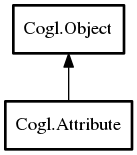

- Attribute
Attribute
Object Hierarchy:
Description:
Namespace: Cogl
Package: doc
Content:
Creation methods:
- public Attribute (AttributeBuffer attribute_buffer, string name, ulong stride, ulong offset, int components, AttributeType type)
Describes the layout for a list of vertex attribute values (For example, a list of texture coordinates or colors).
- public Attribute.const_1f (Context context, string name, float value)
Creates a new, single component, attribute whose value remains constant across all the vertices of a primitive without needing to duplicate the value for each vertex.
- public Attribute.const_2f (Context context, string name, float component0, float component1)
Creates a new, 2 component, attribute whose value remains constant across all the vertices of a primitive without needing to duplicate the value for each vertex.
- public Attribute.const_2fv (Context context, string name, float value)
Creates a new, 2 component, attribute whose value remains constant across all the vertices of a primitive without needing to duplicate the value for each vertex.
- public Attribute.const_2x2fv (Context context, string name, float matrix2x2, Bool transpose)
Creates a new matrix attribute whose value remains constant across all the vertices of a primitive without needing to duplicate the value for each vertex.
- public Attribute.const_3f (Context context, string name, float component0, float component1, float component2)
Creates a new, 3 component, attribute whose value remains constant across all the vertices of a primitive without needing to duplicate the value for each vertex.
- public Attribute.const_3fv (Context context, string name, float value)
Creates a new, 3 component, attribute whose value remains constant across all the vertices of a primitive without needing to duplicate the value for each vertex.
- public Attribute.const_3x3fv (Context context, string name, float matrix3x3, Bool transpose)
Creates a new matrix attribute whose value remains constant across all the vertices of a primitive without needing to duplicate the value for each vertex.
- public Attribute.const_4f (Context context, string name, float component0, float component1, float component2, float component3)
Creates a new, 4 component, attribute whose value remains constant across all the vertices of a primitive without needing to duplicate the value for each vertex.
- public Attribute.const_4fv (Context context, string name, float value)
Creates a new, 4 component, attribute whose value remains constant across all the vertices of a primitive without needing to duplicate the value for each vertex.
- public Attribute.const_4x4fv (Context context, string name, float matrix4x4, Bool transpose)
Creates a new matrix attribute whose value remains constant across all the vertices of a primitive without needing to duplicate the value for each vertex.
Methods:
- public weak AttributeBuffer get_buffer ()
- public Bool get_normalized ()
- public void set_buffer (AttributeBuffer attribute_buffer)
Sets a new AttributeBuffer for the attribute.
- public void set_normalized (Bool normalized)
Sets whether fixed point attribute types are mapped to the range 0→1.
Inherited Members:
All known members inherited from class Cogl.Object